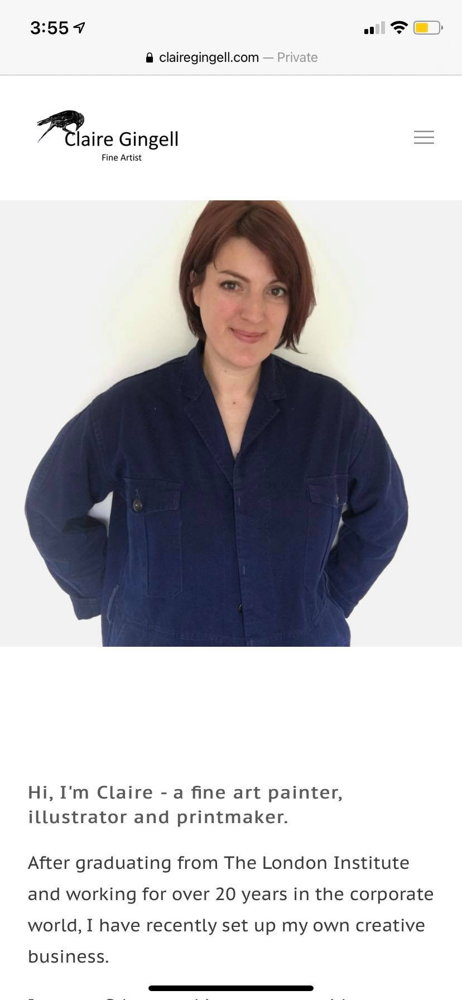
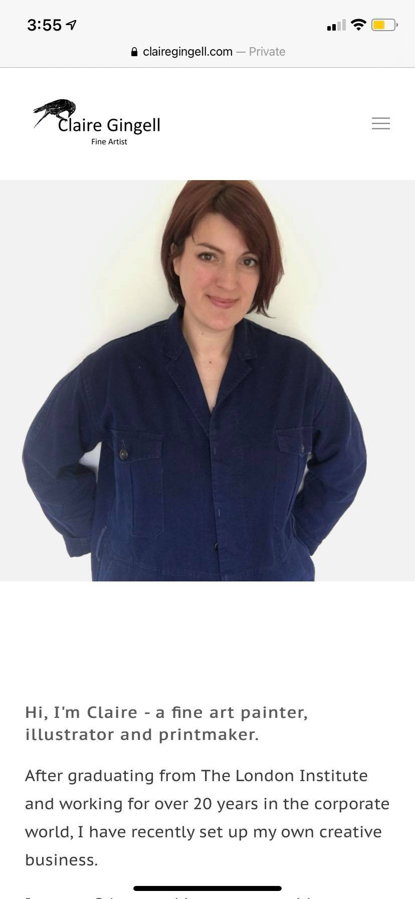
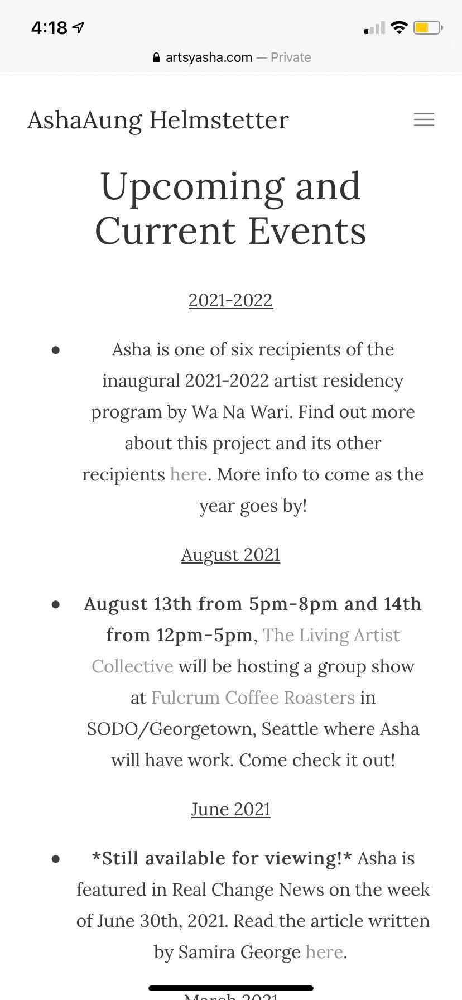
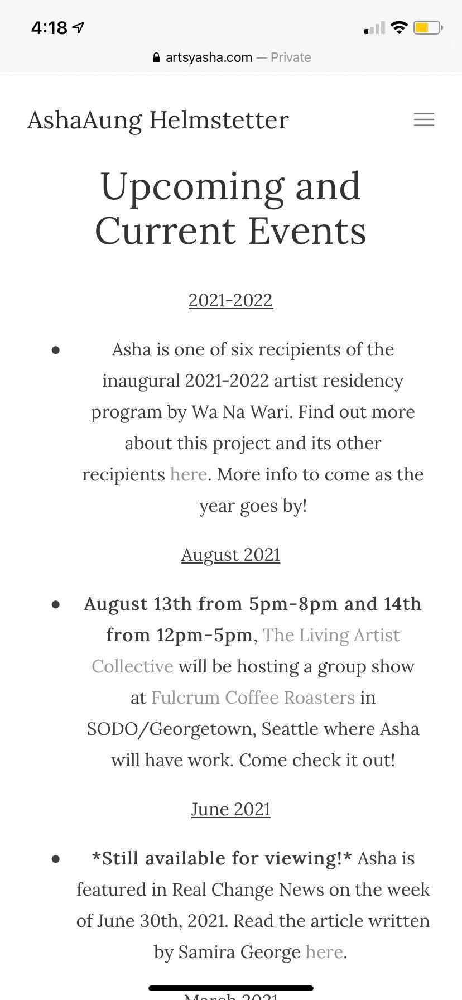

The site shown within the link "SITE 1" - shares an identical responsive web design when compared between the mobile and desktop. This site contains a set viewport meta which scales the size of the website through different devices, shown below is an image that is taken on an iPhone XR. As you can see the website is positioned to fit within the screen of the device along with other sections such as the images, paragraphs, and menu.
 

The site shown within the link "SITE 2" - is somewhat differential when compared to both mobile and desktop devices. As this responsive web design is also set as a viewport meta, sections within the mobile device seem to position in a clustored form due to scaling and sizing although all sections manahge to fit within the spaces of both devices.
 

The site shown within the link "SITE 2" - is somewhat differential when compared to both mobile and desktop devices. As this responsive web design is also set as a viewport meta, sections within the mobile device seem to position in a clustered form due to scaling and sizing although all sections manage to fit within the spaces of both devices.
| Statement | Acceptance Criteria | Estimation | Priority |
|---|---|---|---|
| As a user, I want the app to notify me on the latest updates made within the website. | 1. Once user opens app, a prompt will display giving an option whether to turn notifications on or off.
2. User can manually enable or disable notifications through their Settings on the device. |
According to the planning poker estimate approach this can be considered as Story Points: 8 | Priority: 1
High Priority |
| Statement | Acceptance Criteria | Estimation | Priority |
|---|---|---|---|
| As a user, I want to be able to download images within the application. | 1. Once user selects photo.
2. User can touch down on the screen giving an option to Save Image. 3. User should download image into their gallery. |
According to the planning poker estimate approach this can be considered as Story Points: 8 | Priority: 2
Medium Priority |
| Statement | Acceptance Criteria | Estimation | Priority |
|---|---|---|---|
| As a user, I want the app to be able to have a constant functional look and interaction throughout all platforms. | 1. Application should be constant for all platforms and devices. | According to the planning poker estimate approach this can be considered as Story Points: 5 | Priority: 1 High Priority |
Click the button to get geolocation.